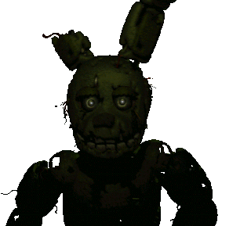
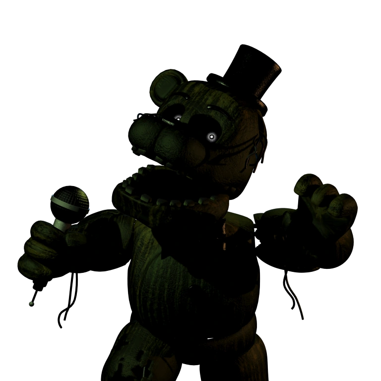
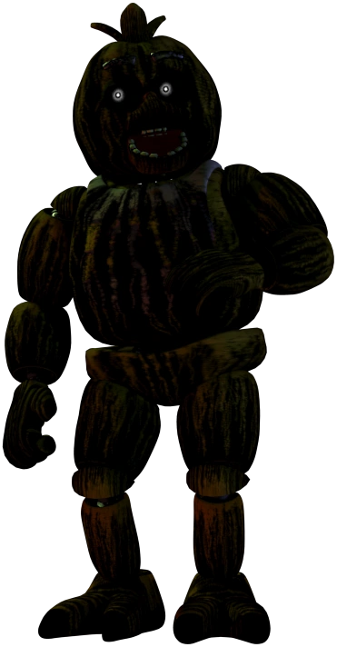
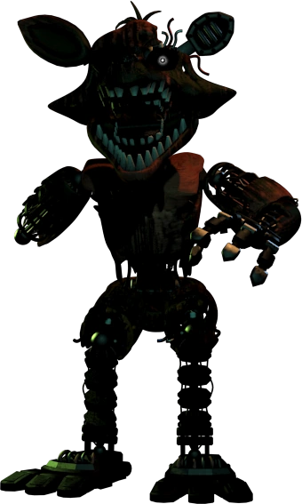
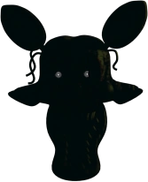
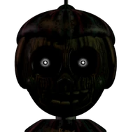
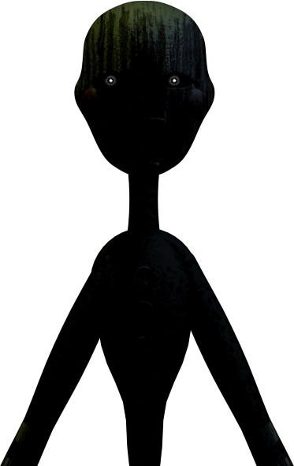

Five Nights at Freddy´s 3 foi lançado em 2 de março de 2015. Dessa vez o jogo se passa em uma atração de horror baseada nas tragedias envolvendo a Fazbear Entertainment. Seu objetivo é o mesmo dos jogos anteriores, vigiar o local durante a noite das 00:00 (12:00 AM) às 06:00 (06:00 AM) da manhã e ao mesmo tempo fazer parte da atração, mas dessa vez só existe um animatronic no estabelecimento tentando te matar.
Gameplay
Ao contrário dos jogos anteriores, existe apenas um animatrônico que pode atacar o jogador. Porém, existem seis Phantoms (Fantasmas), cada um com comportamentos únicos que se o jogador não conseguir evitar, irão atacar o jogador e atrapalhar seus sistemas, permitindo que o animatrônic se mova mais rápido.
O jogador não tem como se defender de Springtrap quando ele chega ao escritório. Eles têm que usar iscas de áudio para mantê-lo afastado e vedar a ventilação conectada à câmera em que ele está para evitar que ele chegue rapidamente ao escritório.
Aleatoriamente ou se usados demais, os sistemas do jogador (iscas de áudio, sistema de câmera ou ventilação) ficarão offline, e eles terão que usar o Painel de Manutenção para reiniciá-los, o que muitas vezes permite que Springtrap chegue ao escritório mais rapidamente, o que significa que o jogador deve usar seus sistemas com cuidado, especialmente em noites mais difíceis, onde os erros acontecem com mais frequência.
Animatronics
Springtrap
I always come back
William Afton foi o principal antagonista da série Five Nights at Freddy's Clickteam (FNaF 1 à 6). Ele foi o cofundador e proprietário da Fazbear Entertainment e Afton Robotics, LLC, bem como um serial killer diretamente e indiretamente responsável pela maioria dos incidentes e tragédias ao longo da série, incluindo ser o culpado envolvido no Incidente das Crianças Desaparecidas. O papel de Afton na série é fundamental, mas seu legado parece ser continuado por The Mimic (que também pode ter sido Glitchtrap e Burntrap). Use o audio das cameras para atraí-lo para outra camera e feche a tubulação aonde ele esteja.
Phantom Freddy
Uma variante fantasma de Freddy Fazbear, normalmente baseada em Withered Golden Freddy do segundo e sétimo jogos, mas assume a forma do clássico Freddy em Help Wanted. Estreou pela primeira vez em Five Nights at Freddy's 3, ele reside no corredor fora do escritório. E não olhe para ele!
Phantom Chica
Uma variante fantasma da Chica, com design baseado na variante clássica. Ela apareceu pela primeira vez em Five Nights at Freddy's 3, ela surge na CAM 07. Mude de camera quando vê-la
Phantom foxy
Uma variante fantasma de Foxy, com seu design baseado em Withered Foxy do segundo jogo, mas em Help Wanted, ele é baseado no clássico Foxy. Ele apareceu pela primeira vez em Five Nights at Freddy's 3, onde surge dentro do escritório. Caso isso aconteça levante o monitor
Phantom Mangle
Uma variante fantasma de Mangle. Ele apareceu pela primeira vez em Five Nights at Freddy's 3, onde surge na CAM 04.
Phantom Ballon Boy
Uma variante fantasma de Balloon Boy. Ele apareceu pela primeira vez em Five Nights at Freddy's 3, onde aparece em quase qualquer lugar nas câmeras de segurança. Mude de camera ou abaixe o monitor
Phantom Puppet
Uma variante fantasma do Puppet. Ele só apareceu em Five Nights at Freddy's 3, onde surge na CAM 08. ela bloqueia seu movimentos e enquanto isso springtrap se aproximara do jogador.
Os Phantoms são alucinações, e não podem te matar, eu acho...